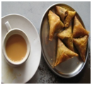
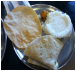
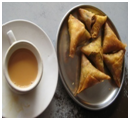
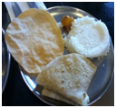

SHAKTHI: A HOME FOR WOMEN EMPOWERMENT
MOTTO : A Society where every deprived, deserted, downtrodden woman leads a healthy, fulfilling life of self-reliance and dignity and awakens the creative potential of women.SHAKTHI strives for women empowerment, has been formed with a great desire and determination of uniting the women force of Nellore for a creative movement to reach out to remote rural areas and establish bonds with the undeserved communities VLCT & RC is heralded in re-awakening the creative potential of women without succumbing to the western culture which is enforced on us as modern thoughts and urges the women to come out of their shells for the realization of self. We train the women to tackle her social challenges boldly, come forward and be a part of the new era of women empowerment and nation building. It acts as the womb for the social, cultural, economical and intellectual empowerment of women. SHAKTHI is based on Indian culture and upholds the sanctity of Indian woman hood. As such helping women to achieve economic independence by enabling them to have independent employment and income has been accorded the highest priority Promotion of Women’s Self-Help Groups (WSHGs) has therefore been adopted as a key strategy for achieving women’s empowerment and this applicable only through SHAKTHI
Our core focus in VLCT & RC is to provide skill building and skill up-gradation training who are associated with us and thereby substantially increase their income. Which can make meaningful contributions in alleviating poverty? We facilitate income generating opportunities for women who increases their self confidence and sustain to remain independent and leaders for other to follow them. VLCT & RC, reaches out to the rural communities and spreads awareness about their potential gateway for sustainable livelihoods. The thrust is on locating and training the target populace to transform them into skilled and alongside, exploring how their collective strengths may be developed further so as to enable them becomes life self sustainable. The main objectives of such exposure visits are: to enable the unskilled persons to take a first-hand look at how skilled women work; to facilitate interactions between the potential skill development trainees and the previously trained women; and to acquaint the unskilled persons with the different steps involved. This enables the people who are interested in enrolling for skill development training to take informed and well thought decision and start considering SHAKTHI as a sustainable source of livelihood. Women bear almost all responsibility for meeting basic needs of the family, yet are systematically denied the resources, information and freedom of action they need to fulfill this responsibility. The vast majority of the world's poor are women
VLCT & RC believes that when women are supported and empowered, all of society benefits. Their families are healthier, more children go to school, agricultural productivity improves and incomes increase. In short, communities become more resilient. Hence shelter being the basic necessity for those deprived and destitute women SHAKTHI caters all the needs and creates a platform for self dependency through various income generating activities.
Provide high quality nutrition food for these deprived and deserted women. In SHAKTHI we maintain hygiene and cleanliness to the core and strictly follow the diet along with regular quality checkups and the menu described by the nutritionist. Aesthetically designed timetable are followed as per schedule to maintain and keep the women healthy fit and strong.
 



| Break Fast | Brunch | Lunch | Snacks | Dinner |
|---|---|---|---|---|
| 8:00-9:00 am | 11:00-11:30 am | 1:00-2:00 pm | 4:00-4:30 pm | 7:00-8:00 pm |
MEDICAL SERVICES:
SHAKTHI has focused more and arrange Regular free MEDICAL check-ups to identify and reduce various kinds of diseases among the inmates of the home. Our Trust is committed to provide and give proper sanitation tips to improve their health and create healthy atmosphere for the future generations. These programmes are mainly aimed at identifying malnutrition, vitamin deficiency, and free medicines were delivered to the appropriate
VLCT & RC provides has rescued many 1000’s of women from their deprived status of lives and has provide vocational and occupational skills on a large scale sector to make them self reliable and self sustainable. Forming SHG among themselves to create stronger relationships and endure life sustenance through various kinds of activities like PHYNOL making, Tailoring and Embroidery, Saree paintings, and computer skills. A large group of self reliable women are joined into mainstream of live by joining various jobs in and around Nellore.

Our trust stands first in fighting for the rights of the women protection as the chairperson herself being women can very well understand the plight of the present situation of women in the society. VLCT & RC strives and thrives for the rights and responsibilities of women and voices in the social equality and social justice. Frequent rallies and awareness programmes were conducted for enhancing the women in knowing himself..
To improve the mind set of these destitute and deprived women mentally and physically various kinds of sports and cultural activities are conducted in the home. They also do participate in stage shows conducted at district level, such that they are also equal in the society and develop a sense of belongingness..
We in SHAKTHI not only emphasis on all the above mentioned but also gives importance about women’s mental status. Various kinds of cultural activities are conducted in the house to extract and improve the abilities of each and every woman which are hidden in them. To bring out the best out of them and to improve intra mural relationships these kinds of cultural activities help them most. Apart from cultural activities the house will conduct excursion trips to different parts of the district to enhance the thinking abilities and creating an atmosphere where these women can feel that he is in a family which helps him to do more for the family..
we strive for much to be done. We make an assessment of their level of education and make a plan for continuing education or employment. This ongoing process does make and create a family of Love filled with compassion and trust to endeavor humanity.